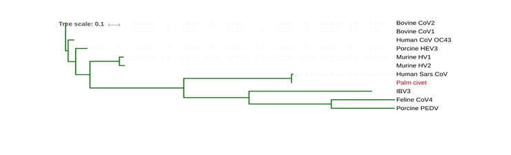
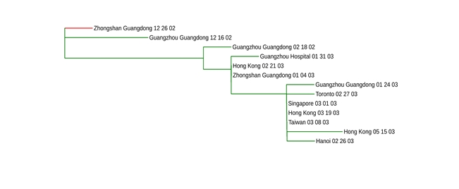
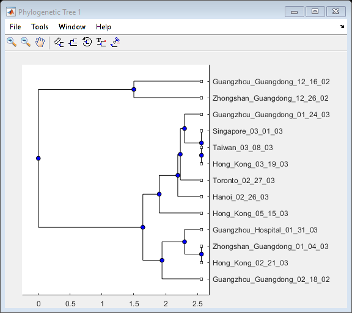

ECES T580 Lab 5
Bhautik (Brian) Amin
Contents
Lab 5.1.1
Background
SARS, a disease/illness that first appeared in China. It is a virus, and underwent mutations over a long period of time. The goal is to figure out what is the virus is related too
The pipeline consists of MAFFT, for quick alignment of multiple sequences with little computational burden. Some error but it works for our test case MAFFT will first align series of sequences, then we will pass the data onto readseq that will convert to a different data format (for running RAxML, "maximum likelihood"). From there we will take the data into iTOL where we will be able to visulize a tree
Here is the output from iTOL:
figure(1)
imshow('part1_tree.jpg')
 Upon analysis we can see that Palm Civet is most likely the closest relative to Human SARS
Lab 5.2.1
Run SARS Data Part 2 through the same pipeline and show results
figure(2)
imshow('part2_tree.jpg')
 Upon analysis we can see that the epidemic most likely originated from Zhongshan Guangdong in 12/26/02
Import the data sequence using fastaread
[headers, sequences] = fastaread('SARS_Data_Part_2.fasta');
Calculate pairwise distance between sequences
D = seqpdist(sequences, 'Alphabet', 'NT','indels','pair');
Construct a phylogenetic tree from pairwise distances
phyloTree = seqlinkage(D,'average',headers)
view(phyloTree)
Phylogenetic tree object with 13 leaves (12 branches)
Upon analysis of this tree, we can see that the Zhongshan Guangdong 12/26/02 epidemic strain branched along with Guangzhou Guangdong 12/16/02 epidemic strain, and that they shared some common ancestor.
The difference between the RAxML model and the UPGMA model, in the UPGMA method, it makes the assumption that rate of mutations is constant over time,for all lineages in a tree. This means that all leaves of the tree have same distance from the root. Whereas, the RAxML shows sequences changing and mutating and varying length of times. Whereas the maximum likelihood model is seen to have root and branch distances varying, not utilizing this basic assumption of the molecular clock hypothesis